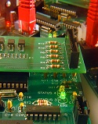

About Us

Wistex was founded in 1974 in Philadelphia, PA by George Weinfurter and Dempsey Stuckie with the main purpose of providing the very best in instrumentation and process control. With expertise in liquid level control, temperature control, and several other control systems, Wistex strived to supply and manage Delaware Valley’s complete source for engineering and components.
In 1988, after the passing of Dempsey a few years earlier, George decided to retire and approached his best salesman, Stephen Crognale to buy him out. In a new location Southampton, PA and for the next several years George stayed on as a sales manager to transition and grow the Wistex business. As technology increased, so did Wistex. Stephen Crognale who had a passion for new innovative approaches to fundamental theories was able to keep Wistex on the forefront on the technological curve. He did this by diversifying the product offering and services provided and including something new in the market place such as Variable Frequency Drive Service.
By specializing in VFD service, Stephen was able to show an exponential growth in a short amount of time. As a result, in 2000, Wistex moved to a new location which provided the ability to warehouse and manage a higher volume of inventory. In addition to the increase space provided, the new location gave new capabilities for the Wistex Repair Service Division to access and service products in house.
Throughout the early 2000s, Wistex continued to grow as a distributor and service agency for electrical controls. With the unfortunate early passing of Stephen Crognale, his children, Christina and Stephen Jr. have stepped up to continue, grow and diversify Wistex. Under this third generation of leadership, Wistex has continued to evolve. In 2008, Wistex was approached by Jim Karnavas owner and CEO of Technovation and Associates, Inc. to continue to his business as he was preparing for retirement. Technovation and Associates, Inc was operated and located in Pittsburgh, PA specializing in the distribution of instrumentation and electrical process control. The transition was complete in mid 2009, which has led to the new formation of Wistex II LLC. With its new expanded territory coverage and product offering Wistex was able to show strong steady growth.
Today, Christina and Stephen Jr. continue to grow and develop Wistex following the original vision set by George, who continues to act as a consultant, and from their father’s guidance and example.